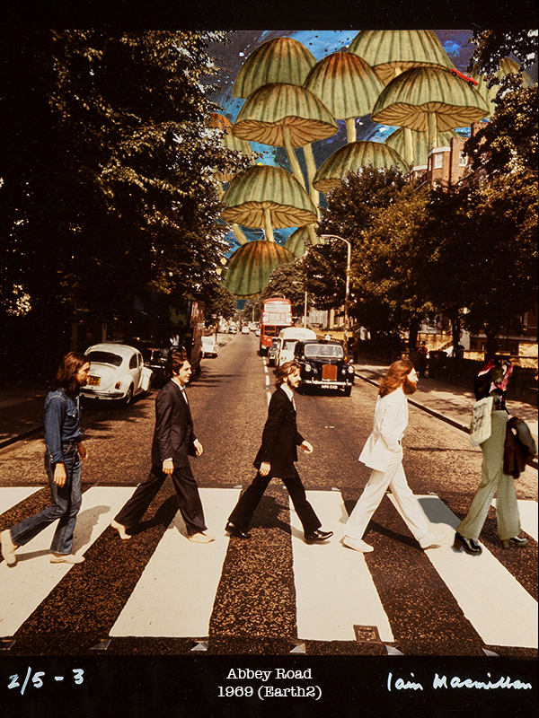

Altered Image:
The image is created by taking one of the unused images for The Beatles Abbey Road album cover and adding an image of myself into the image. I though it would be fun to take an old image and a new image and have to make them look cohesive together. The picture of myself is very light so I added a brown color overlay and texture overlay to create more of an old image sepia tone. I titled the image at the bottom "Abbey Road 1969 (Earth2)" because I wanted it to be like this picture was actually quite "normal" but on a different Earth or in a different reality/dimention. Obviously this isn't our normal reality because of the giant mushrooms with the car driving on one of them in the background but that isn't anything weird in this different reality. I had fun making everything work together to keep that old image feel.